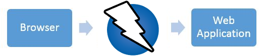

Zed Attack Proxy
(Nivel básico)
Sección de Seguridad de la información - Rodrigo Castro Díaz
Agenda
- Introducción a ZAP
- Detalles de configuración
- Escaneos pasivos y activos
- Reportes
¿Qué es ZAP?
Zed Attack Proxy (ZAP) es una herramienta gratuita de pruebas de penetración de código abierto que hace parte del Open Web Application Security Project (OWASP). ZAP está diseñado específicamente para probar aplicaciones web y es flexible y extensible.
ZAP es un proxy de estilo hombre en el medio
Si ya hay otro proxy de red en uso, como en muchos entornos corporativos, ZAP se puede configurar para conectarse a ese proxy.

Detalles iniciales
¿Cómo obtener ZAP?
ZAP requiere Java 8+ para ejecutarse
Antes de usar
¿De qué manera voy a usar ZAP?¿Cómo proxy local, cómo servidor de pruebas?
Ajustes de la JVM antes de lanzar ZAP
- Ajustes de heap
- Garbage Collector
configurar proxy
Por defecto, ZAP usa la dirección de 'localhost' y el puerto '8080', pero estos se pueden cambiar
Configuring proxiesPrimeros pasos con ZAP
Addons
- Python Scripting y/o Ruby Scripting
- Tree Tools
- Community Scripts
- CustomReport
- Export Report
- Requester